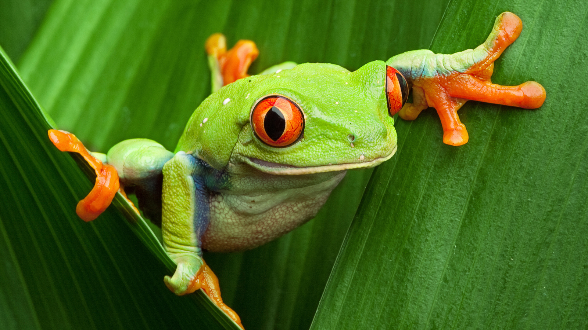
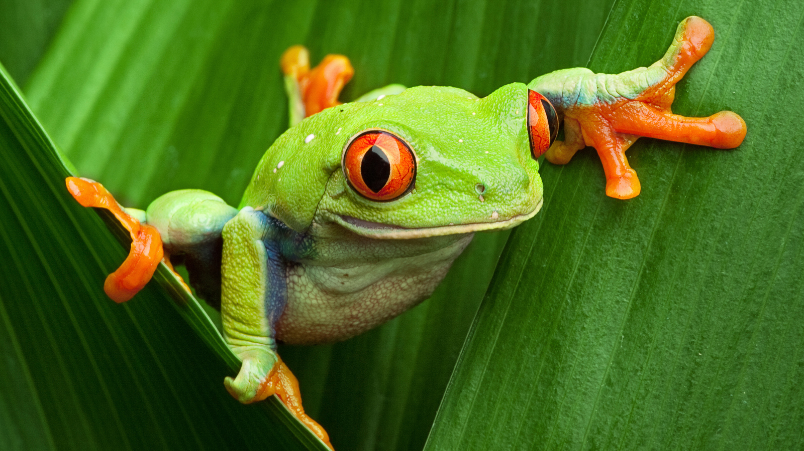

About Amphibans -
Subclasses: 1
Orders: 3
Families: ~74
Genera: ~565
Species: ~8,301
Amphibians are often lumped in with reptiles, but they are very much their own group of animals! The amphibian class includes animals like frogs and toads, newts and salamanders and a strange group of snake-like amphibians called caecilians.
These animals all have moist, scale-less skin that they use for water absorption and gas exchange within their environment. Because their skin is so permeable, they are very sensitive to environmental toxins. Like reptiles, amphibians are also ectotherms and are not able to regulate their own body temperature.
One key characteristic that amphibians share is their complex life cycles that include larval stages. Many amphibians reproduce through external fertilization and all amphibians are oviparous- meaning they lay eggs rather than giving live birth. Many species attract mates through vocalizations (croaking and ribbiting).
 

Example of an amphibian: Golden Poison Frog (Phyllobates terribilis)

Many species of frogs or toads are very poisonous due to the presence of toxin glands on their skin. In fact, one species of frog, the Golden Poison frog is arguably one of the most dangerous animals in the world due to the incredibly potent poison they secrete.
Historical -
:max_bytes(150000):strip_icc():format(webp)/toad-on-the-ground-1161279534-adc93aee9d93438db10cc8c5bde5b98a.jpg)
310 to 300 million years ago -
The First Amphibians
It's only in the late Carboniferous period, from about 310 to 300 million years ago, that we can comfortably refer to the first true amphibians Read more
The earliest amphibians evolved in the Devonian period from sarcopterygian fish with lungs and bony-limbed fins, features that were helpful in adapting to dry land. They diversified and became dominant during the Carboniferous and Permian periods, but were later displaced by reptiles and other vertebrates more....
Oldest Amphibians -
The Artis Zoo in Amsterdam, the Netherlands has owned two giant Japanese salamanders (Andrias japonicus), both of whom reached 52 years - the oldest documented age for an amphibian, and indeed the oldest for a salamander. More information in
this web.
New about Amphibian species -

Meet the newly discovered amphibian Brachycephalus rotenbergae, a type of pumpkin toadlet found in Brazil's Atlantic Forest. The animal belongs to a family of at least 36 pumpkin toadlets, which are named after the popular Halloween squash. Read this article for more information.
Population -
8000 - The number of known amphibian species is approximately 8,000, of which nearly 90% are frogs. For more checkout this web.